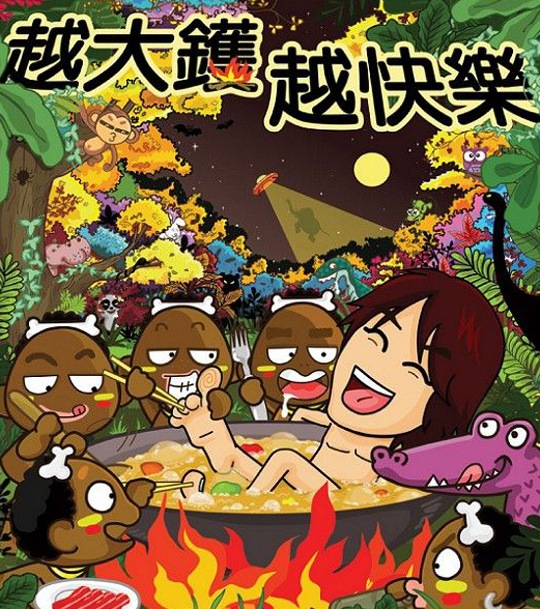

这次时隔不久，又开SHOW了。比以前快了不少，不知道是缺钱用，还是借《奸人坚》的人气乘胜追击，总之都是要支持的了。今年还会第一次开到澳门理工大学，可惜我还是没钱没时间没入港证去看。CIN同学现在已经杀到香港了，真是羡慕。 可能非广东的朋友不了解。所谓越大鑊，越快樂的意思，就是——越遇到大麻烦，越糟糕，就越快乐。“大镬”在广东话里的有意思“糟糕了”“闯祸了”的意思。可能这次的SHOW会积极一点，所谓人生总有那么一些比较低谷的时候，如果因为错过日出美景而流泪，我们也会错过日落的美丽。黄秋生所说：人生总有低估高潮，既然是这样，低谷的时候就积极一点，尽管看看明天会如何。看黄子华栋笃笑永远都是这样的了，说了很多小市民辛酸，最后都是有笑有泪。 这次的POSTER虽然也还可以，不过颜色方面我还是喜欢上一张。最后还是祝演出成功，我就等着以后不知道谁会给我传个录音，或者CIN同学之类的带回来张DVD才能看了。
